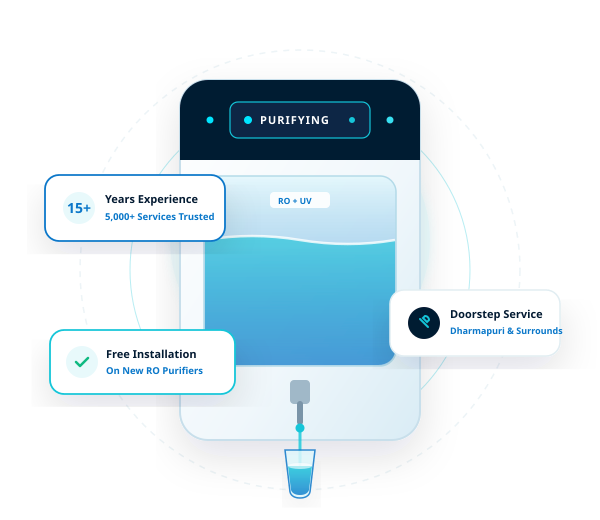
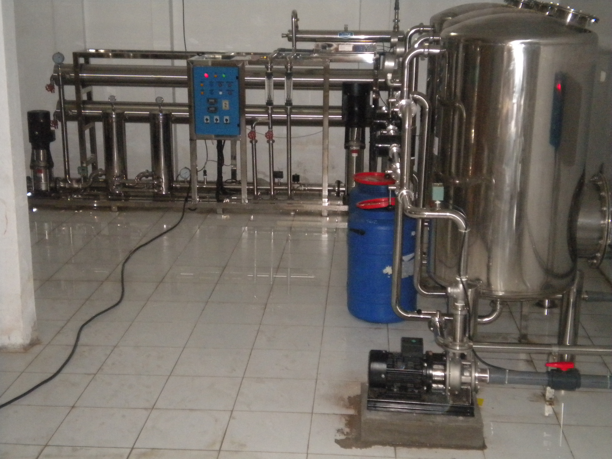

Pure Water. Professional RO Solutions in Dharmapuri.
RO Water Purifier Sales, Installation & Service in Dharmapuri
VARUN AQUA TECH provides RO water purifier sales, installation, repair, maintenance and doorstep service for domestic and commercial requirements in Dharmapuri and nearby areas.

VARUN AQUA TECH
At VARUN AQUA TECH, every RO system is personally supervised and serviced under the leadership of Mr. Varun. With over 15 years of ground-level experience across Dharmapuri district, we guarantee authentic components, accurate water testing, and zero-compromise purification for your family and business.
Custom Built RO Machines & Plants
Specially assembled water purification systems by VARUN AQUA TECH, calibrated specifically for Dharmapuri's borewell & high-TDS water. Order directly via WhatsApp or manage custom builds below.
Need a custom capacity machine not listed here? Call Mr. Varun directly at +91 88380 55968 or click any machine to chat on WhatsApp.
Complete RO Water Purifier Solutions
From choosing a new RO purifier to installation, repair and ongoing maintenance, VARUN AQUA TECH provides practical water purification solutions for homes and businesses.
RO Water Purifier Sales
Domestic and commercial RO purifier solutions based on customer requirements — Free Installation Included.
Explore RO Solutions →RO Installation
Professional installation and doorstep support. Free installation provided on all new purifiers purchased with us.
Book Installation →RO Maintenance
Routine servicing and maintenance to help keep RO systems operating properly.
Schedule Maintenance →AMC Services
Annual maintenance solutions for customers looking for ongoing RO system care.
Ask About AMC →Filter & Membrane Replacement
Replacement of filters and RO membranes when required.
Request Replacement →Is Your RO Purifier Giving You Trouble?
Select the issue you are experiencing with your water purifier below. Our team can assess the system and recommend the appropriate service.
Ready to get your system checked?
Our team can assess the system and recommend the appropriate service for your location in Dharmapuri.

RO Solutions With Local Service Support
Professional RO Support for Homes & Businesses
VARUN AQUA TECH provides RO purifier sales, installation, doorstep support, repairs, maintenance and replacement services for domestic and commercial customers in Dharmapuri and surrounding areas.
How It Works
Getting your RO purifier sorted with VARUN AQUA TECH is straightforward and practical.
Tell Us Your Requirement
Tell us whether you need:
- New RO purifier
- Installation
- Repair
- Maintenance
- Filter replacement
- Membrane replacement
- AMC
Get the Required Support
Arrange the appropriate sales, installation, repair or maintenance service at your doorstep or location.
RO Purifiers for Homes
Looking for an RO water purifier for your home? VARUN AQUA TECH provides domestic RO sales and installation support in Dharmapuri and nearby areas.
Because water conditions vary widely across Dharmapuri, the appropriate purifier depends on key factors:
- ✓ Free Professional Installation — Included with all new domestic RO purifiers
- ✓ Water source — Borewell, open well, or municipal supply
- ✓ Water quality — Measured Total Dissolved Solids (TDS) & hardness
- ✓ Household requirements — Daily drinking & cooking volume
- ✓ Purification needs — RO, UV, UF, or mineral enhancement

Commercial RO Water Purification Solutions
For businesses and commercial requirements, VARUN AQUA TECH provides RO purifier sales, installation and service support based on the customer's requirements.
Whether you operate a shop, school, clinic, small hotel, or office in Dharmapuri district, we configure commercial purification systems to deliver reliable flow capacity and water quality.
- ✓ High-capacity commercial purification systems (25 LPH, 50 LPH, 100+ LPH)
- ✓ Professional installation and doorstep plumbing integration
- ✓ Scheduled filter media and membrane maintenance
- ✓ Commercial AMC contracts for uninterrupted clean water
RO Water Purifier Service in Dharmapuri
VARUN AQUA TECH is an RO water purifier sales and service center located near Dharmapuri in Bosinaickenhalli, Tamil Nadu. We provide domestic and commercial RO purifier sales, installation, repair, maintenance, AMC, filter replacement and membrane replacement services.
Our local service base on Harur Main Road allows us to support residential customers and businesses across Dharmapuri, Bosinaickenhalli, and surrounding areas with dependable doorstep service and practical water purification solutions.
Visit VARUN AQUA TECH
Find our official sales and service center or contact us for doorstep support.
VARUN AQUA TECH
Address
India1 ATM, Harur Main Road, near Dharmapuri, Bosinaickenhalli, Tamil Nadu – 635303, India
Phone
Business Hours
Open 24 Hours — Monday to Sunday
Find Us on Google
Connect with our genuine Google Business Profile for accurate NAP details, directions to our Harur Main Road location, and verified business information.
Category: RO Water Purifier Sales & Service Center
Primary Service Area: Dharmapuri, Bosinaickenhalli and surrounding areas.
Need RO Service or a New Purifier?
Tell us what you need and VARUN AQUA TECH can help you with the appropriate RO sales, installation or service requirement.
Direct Assistance:
Phone: +91 88380 55968
Location: India1 ATM, Harur Main Road, near Dharmapuri, Bosinaickenhalli, Tamil Nadu – 635303, India
We provide prompt doorstep assessments for homes, offices, and commercial establishments across Dharmapuri and neighboring taluks.
Request Service
Frequently Asked Questions
Helpful answers regarding our RO purifier sales, installation, and doorstep service in Dharmapuri.
VARUN AQUA TECH provides RO purifier sales, installation, repair and maintenance support in Dharmapuri and selected nearby areas. Contact the team to confirm service availability for your location.
Doorstep support may be available depending on the service requirement and location. Contact VARUN AQUA TECH to confirm availability.
Service may be available in selected surrounding areas and other parts of Dharmapuri district. Confirm your location before booking.
Yes. RO installation is one of the services offered by VARUN AQUA TECH.
Yes. Filter and membrane replacement support is available when required.
AMC services are offered. Contact VARUN AQUA TECH for current AMC details and availability.
Ready to Get Your RO System Sorted?
Whether you need a new RO purifier, installation, repair, maintenance or replacement service, contact VARUN AQUA TECH.
Serving Dharmapuri, Bosinaickenhalli and nearby areas.